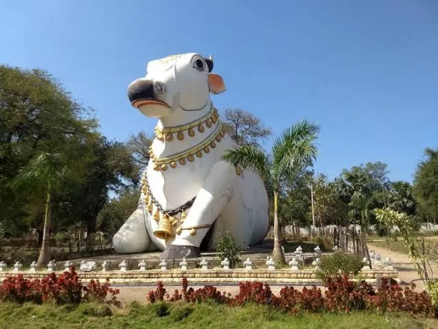
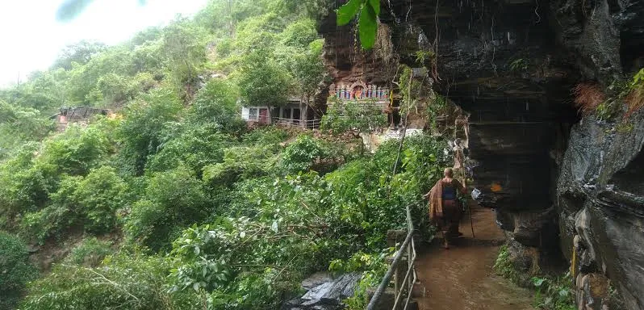
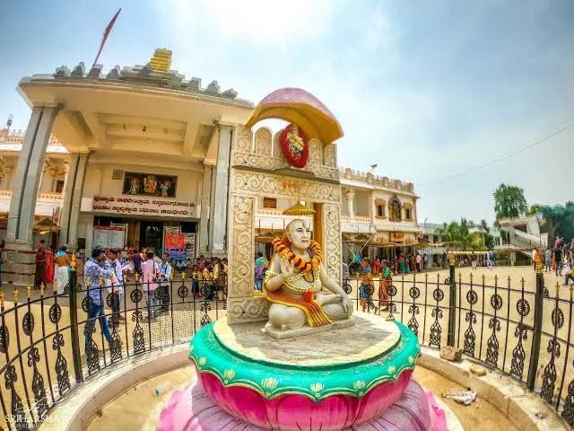
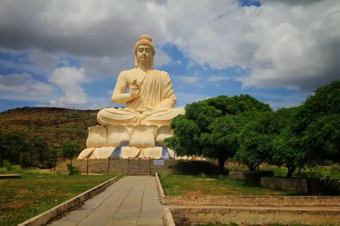

- The first place on our list is situated a little far away from Kurnool.
- At some 180 km away from the city center, and one of the banks of the Krishna river, Srisailam is one of the famous twelve Jyotirlingas of Lord Shiva.
- Srisailam is one of the most celebrated pilgrimage centers of Lord Shiva in the entire nation.
- This famous site is known for Bhramaramba Mallikarjuna Temple — a dedication to Lord Shiva — and Srisailam Dam.
The Beautiful Orvakal Rock Garden
- The one that we want to present is the Orvakal Rock Garden that is situated 20 km from the Kurnool city center.
- This wonderful site is all filled with the extensive natural beauty of majestic rock formations
- Orvakal Rock Garden is located on Kurnool - Nandyal highway, 3 km from Orvakal village.
- The garden is a rare quartz and silica rock formation with sublime surroundings.
- At just 80 km from the Kurnool city center, Sri Yagantiswamy Temple is the iconic pilgrimage site around Kurnool.
- The temple is also known by the name Uma Maheshwara Temple which is a dedication to Lord Shiva.
- This temples lists amongst the most visited places during the Kurnool trip as it is one of the most famous Shiva Temple in the state of Andhra Pradesh.
- The history of this temple dates back to the 5th and 6th centuries during which several Pallava, Cholla, Chalukaya, and Vijayanagara kings offered their contributions which glorified the temple.
The Historic Alampur
- Alampur is a historic site located at a distance of 20 km from the Kurnool city center.
- Alampur is famous for three things: Navabrahma Temple, Jogulamba Temple (a Shakti Peetha), and Sangameswara Temple which were built during the 7th century.
- Located on the Tungabhadra river banks, Alampur is also known as the western gateway to Srisailam.
- With enormous rich pilgrimage and historical significance, Alampur came under the kingship of many rulers including the Kakatiyas, Chalukyas, Satavahanas, Vijayanagara, Bahamani Sultans, and Hyderabad Nizams.
- Legends say that after losing powers from the curse of a saint, Lord Brahma performed penance for Lord Shiva.
Mahanandi: The Heart of Nava Nandi Temples

- Mahanandi is a renowned village and pilgrimage center located at the foothills of the Nallamala Hills in Nandyal district, Andhra Pradesh, India.
- It is especially famous for the Mahanandiswara Swami Temple, an ancient and architecturally significant shrine dedicated to Lord Shiva.
- This temple is one of the Nava Nandis—a group of nine temples in the region, each dedicated to Nandi, the sacred bull and vehicle of Lord Shiva.
Ahobilam: The Sacred Abode of Lord Narasimha

- Ahobilam is a sacred town and important pilgrimage site located in the rugged hills and deep gorges of the Eastern Ghats in the Allagadda mandal of Nandyal district, Andhra Pradesh, India
- It is renowned as the Avatara Sthala (incarnation site) of Lord Narasimha, the lion-headed avatar of Lord Vishnu, who is believed to have manifested here to slay the demon king Hiranyakashipu and protect his devotee Prahlada
Mantralayam: The Sacred Pilgrimage Town of Sri Raghavendra Swamy

- Mantralayam is a renowned pilgrimage town located on the banks of the Tungabhadra River in the Kurnool district of Andhra Pradesh, near the border with Karnataka.
- The town is most famous as the site of the samadhi (jeeva samadhi) of Sri Guru Raghavendra Swamy (1601–1671), a highly revered Hindu saint, philosopher, and proponent of the Dvaita Vedanta tradition established by Sri Madhwacharya.
Belum Caves: India's Longest Cave System in the Plains

- Belum Caves is the second largest cave system in the Indian subcontinent and the longest cave in the plains of India, located in Belum Village, Kolimigundla Mandal, Nandyal district, Andhra Pradesh.
- The caves are renowned for their stalactite and stalagmite formations, long passages, spacious chambers, fresh water galleries, and natural siphons.
move to up